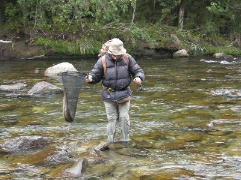
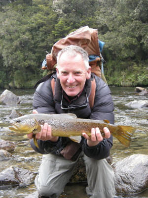
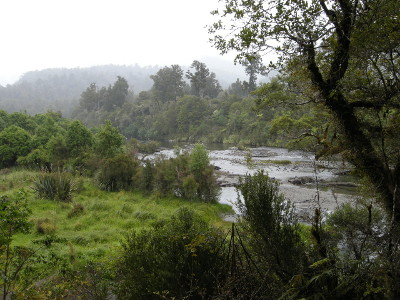
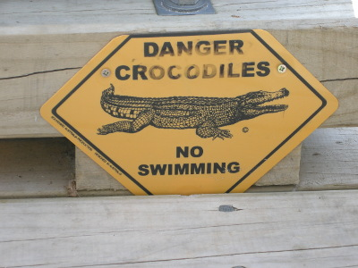
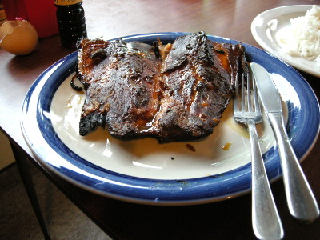

釣行日誌 ＮＺ編 「翡翠、黄金、そして銀塊」
ブリントさんの熟達したランディングテクニック
2010/11/30(TUE)-4
リリースして、水中に消えて行くブラウントラウトを見送っていると、ブリントさんが、この流れ込みではまだ釣れるから粘ってみろ、と言った。全体の１／３ほどがまだ攻め残っている。釣りを再開すると、アドバイス通り続けて２尾がヒットし、激しく長いファイトの末に両方とも釣り上げることができた。この長い荒瀬では、100mほどの区間に４尾も良型の鱒が居たことになる。とても魚影の濃い川であった。
力の強いブラウンとのやりとりに苦労している僕を見て、熾烈な環境を生き延びて大物になった鱒たちは、フィットネスに優れており、強靱な体力を持っているからだとブリントさんが励ましてくれた。
荒瀬の流れ込みを越えて遡行すると、大小のゴロタ石の点在する瀬に出た。やはり対岸側が深くなっており、怪しげな気配が漂っている。じゃあ今度は私が、ということで、ブリントさんが深みに歩みを進め、めぼしい筋を探り始めた。しばらく見ていると、堅実なキャストを繰り返していた彼のロッドが高く掲げられ、ラインがピンと張った。瀬の中の大石の向こうで水しぶきが上がる。と、ここからが凄いのだが、ブリントさんはあれよあれよと言う間に魚をいなして自分の足元まで誘導すると、バックパックからランディングネットを素早く取り外し、慣れた手つきで見事なブラウンをすくい上げた。

う～ん、あのへんが誰かさんと違うところだなぁ、と感心しながら見ていると、彼は岸辺まで来てからネットを降ろし、これもまた熟練の技でフォーセップを使い、鱒の口からフライを取り外した。

笑顔で写真に収まるブリントさんを撮しつつ、どうやったらあんなに簡単に鱒を寄せてきて取り込みまで持ち込めるのか、ぜひその秘訣を教えてもらおうと思った。
そこからは、石の点在する瀬が延々と続いており、しばらく二人でめぼしいポイントをブラインドで探りながら遡行して行ったが、200mほど上がった辺りで急に川底の石が藻か苔で覆われたようになってしまった。ディディーモでは無いのだが、その辺り一帯は非常に滑りやすくなっていた。僕のラバー底のウェーディングシューズではろくに前身も後退もできないような状況である。トレッキング用みたいなブーツでウェーディングしているブリントさんも同様だった。時刻は午後３時前であり、まだ時間はあったが、今日はもう十分満足したということで、そのポイントで引き返すことにした。滑って転ばないように気を付けながらヨチヨチ歩きで下流へ戻り、苔の無い所までなんとかたどり着いた。もう大丈夫、ということで安心したが、今度はブリントさんの速いペースに付いて行くのが大変であった。
頑張って歩いていると、右岸側に支流が流れ込んでおり、そこからブリントさんは森の中へと踏み込んでいった。ここではぐれてしまったら大変なことになるので、これまで以上に早足で彼を追いかけた。しばらく道のない原生林のまっただ中を踏み分けて進んだが、やっと小径が現れた。おそらくは、周辺数十km四方にいるのは僕たち二人だけというような原始の森の中を進むと、今日釣った川を見下ろせる場所に出た。
『ブリントさんの一番のお気に入りというだけあって、実に素晴らしい川だった....』
と感慨に浸りつつ、記念の一枚をカメラに収めた。

原生林の中の小径を汗だくになりつつ歩いて車に戻り、曲がりくねったSH６号線を走って湖畔のロッジに戻ると、午後６時に近かった。まだ夕食の準備を始めるには早いので、ブリントさんが湖のデッキで夕涼みをしようと言った。ブラブラ歩いて桟橋に行くと、黄色の標識が貼ってある。

見ると、「危険・クロコダイル・遊泳禁止」と書いてある。もちろんニュージーランドにワニは居ない。ブリントさん曰く、オーストラリア出身のロッジオーナーのギャグらしい。確かにその標識には、小さな文字で、「オーストラリアみやげプロダクション」と書いてあった。（笑）
まだこの時間帯にはあの凶悪なサンドフライも姿を見せず、ブリントさんと僕はデッキの椅子に腰掛けて、静かな湖面を見つめながら、満ち足りた気分で、ゆったりとしたひとときを楽しんだ。
今日の夕食は、先日キープしたブラウントラウトの燻製をブリントさんが作ってくれた。僕は細長い白米を鍋で炊いて大皿に盛り分けた。卵とキッコーマンの醤油でアツアツの卵かけ御飯が出来た。

今宵もブリントさんの釣り談義が繰り広げられ、アメリカから来る釣り人はものぐさで、鱒が下流へダッシュしても後を追って走らないから、しばしばバラしてしまうことを教えてくれた。また、夏場はショーツにウェーディングシューズというスタイルで釣ることも多いが、白い脚が目立って警戒心の強いブラウンをおびやかしてしまうので、黒いタイツを履いた方が良いというアドバイスも聞けた。
まだ明るい午後９時前に楽しい夕餉も終わり、熱いシャワーを浴びて白く柔らかなベッドに倒れ込んだ。よく釣り、よく歩いた一日だった。
釣行日誌ＮＺ編 目次へ
サイトマップ
ホームへ
お問い合わせ